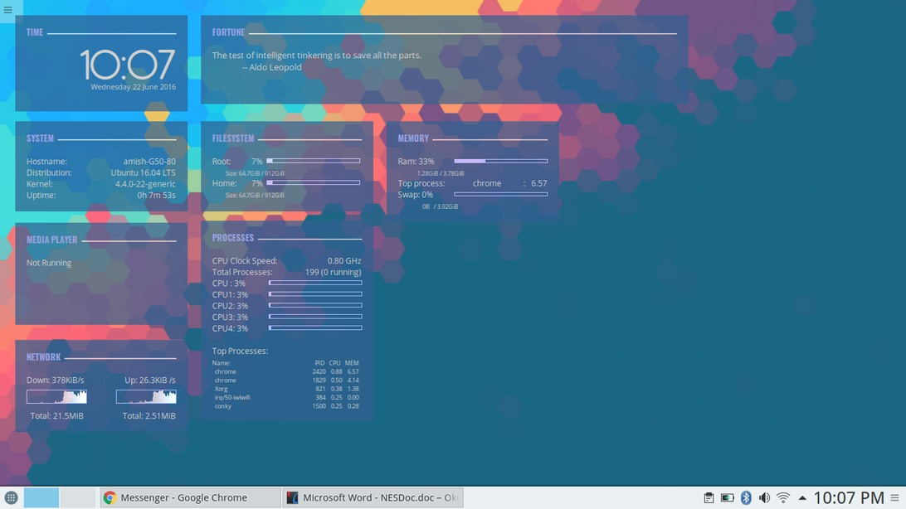
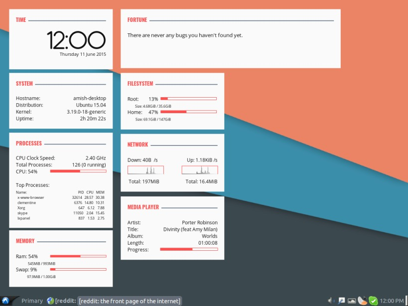
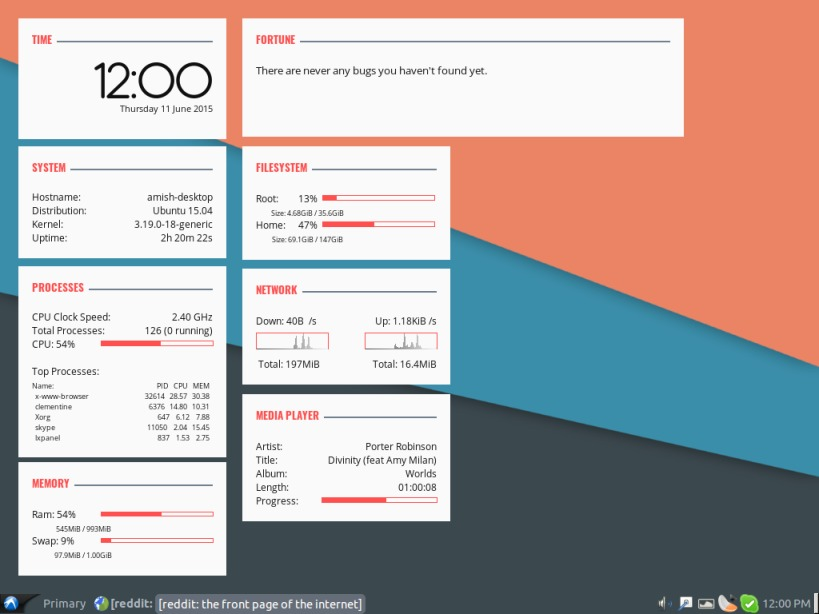

Conky Cards
View on GitHub
Conky Cards is a theme for conky, a system monitor for X. Conky Cards is simple but elegent theme to display system information, time and other information. This conky setup consists of eight individual conky scripts ("cards") which display- Date and time
- General system information
- Processes (top processes and usage)
- Memory and swap usage
- A "fortune" message from fortune
- Disk usage
- Network usage
- Metadata of the current track playing
Screenshots



Installation
Download the zip from hereRequirements
Install conky , preferably the package conky-allFor the mediaplayer "card", you need python3
For the fortune "card", you need fortune
The script uses the following fonts, which are included in the repository/download, install them (see Customization if you want to use your fonts)
- Antipasto Download here
- Open Sans Download here
- Oswald Download here
e.g. if the scripts are in /home/foo/path/to/my/dir then run
$ cd /home/foo/path/to/my/dir $ sed -i 's:INSERT_PATH:/home/foo/path/to/my/dir:' mediaplayer_rc launch_all.shNow, set launch_all.sh as executable (chmod u+x launch_all.sh) and add it to startup applications. If you don't know how, Google is your friend.
Customization
Network
You might want to replace usb0 in network_rc with the device you are connected to the internet like eth0 or ppp0 e.g.$ sed -i 's/usb0/eth0/' network_rc
Media Player
Replace clementine in mediaplayer_rc with your media player. This should probably work just fine after replacement if the media player you are using implements MPRIS 2.0 (most players do). To customize the output, you might want to see python3 mediaplayer.py --helpFortune
See man fortune and edit the arguments to the fortune call in fortune_rcColors
Each script uses a set of three colors, defined as- color1 (color) Color of the Card heading
- color2 (color) Color of the horizontal line stretching from the heading to the right end
- color3 (color) Text color
Here, (color) can be specified using the hexadecimal notation (without the preceding #) or a string from /usr/share/X11/rgb.txt
Examples of legit colors : red, blue, 20efef
You can change any of the above colors to suit you liking/theme Examples: If you want headings in blue, then run
$ sed -i -r 's/color1 [a-z0-9]+$/color1 0000ff/' *_rcSimilarly, you can change the background color of the 'cards' specified by the variable own_window_colour (color) For transparency, uncomment the lines #own_window_transparent yes (by removing the #). Background opacity is specified by own_window_argb_value (value between 0 and 255)
Fonts
The following fonts are used- Antipasto Download here Font in which the clock (time) is displayer
- Open Sans Download here Font for general text
- Oswald Download here Font cards' headings